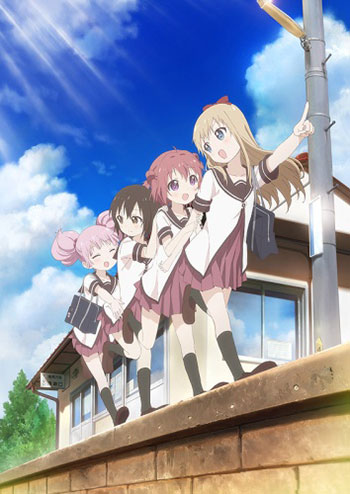

Josee to Tora to Sakana-tachi
A história centra-se na relação entre Tsuneo e Josee. Tsuneo é um estudante universitário e Josee é uma jovem garota que, raramente saiu de casa por si mesma, devido a sua incapacidade de andar. Os dois conhecem-se quando Tsuneo encontra a avó de Josee a levá-la numa “caminhada matinal”.
Yuru Yuri Nachuyachumi!

A história se passa na escola fictícia Nanamori na cidade de Takaoka no Japão. A série se centraliza no dia-a-dia das atividades realizadas no Clube de Diversão da escola, que tem Akari Akaza e suas amigas de infância, Kyōko Toshinō, Yui Funami, e Chinatsu Yoshikawa como membros.
Vingadores: Guerra infinita
Em Vingadores: Guerra Infinita, Thanos enfim chega à Terra, disposto a reunir as Joias do Infinito. Para enfrentá-lo, os Vingadores precisam unir forças com os Guardiões da Galáxia, ao mesmo tempo em que lidam com desavenças entre alguns de seus integrantes.